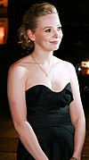

Personajes
- Carrie White (Chloë Grace Moretz/Skyler Wexler)
- La protagonista con habilidades telequinéticas.
- Margaret White(Julianne Moore)
- La madre "loca" y religiosa de Carrie.
- Chris Hargensen (Portia Doubleday)
- La peor enemiga de Carrie. 
- Miss Desjardin (Judy Greer)
- La maestra de Gimnasia.
- Tommy Ross (Thomas Everett Ross)
- Acompañante de Carrie para el baile.


Curiosidades
Carrie es un remake de la pelicula original estrenada en 1976, el remake fue fanzado en 2013 y es una adaptacion de las famosas novelas de Stephen King, escritor de grandes novelas de terror como son: El resplandor (1977), IT/ESO (1986), Cujo (1981)...